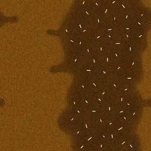
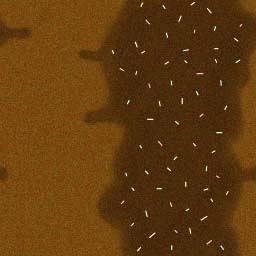

<head>
<!--
<!-- Event Graph ROUTE Table shows event connections -->
<!-- Index for DEF nodes: Clock, DonutThickness, SpecialtyOfTheHouse, StopSizeChanges
Index for Viewpoint node: Viewpoint_1 Index for ExternProtoDeclare definitions: Donut, LightOak
-->
<Scene>
</X3D>
<meta name='title' content='Figure31_7DonutExternalPrototype.x3d'/>
<meta name='creator' content='Figure 31.7, The VRML 2.0 Sourcebook, Copyright [1997] By Andrea L. Ames, David R. Nadeau, and John L. Moreland'/>
<meta name='reference' content=' http://www.wiley.com/legacy/compbooks/vrml2sbk/ch31/31fig07.htm '/>
<meta name='translator' content='Don Brutzman'/>
<meta name='created' content='22 November 2000'/>
<meta name='modified' content='16 December 2023'/>
<meta name='description' content='A donut shape built using prototypes: the Donut geometry node and the LightOak appearance node. Also see Figures 30.5 and 31.6 for comparison.'/>
<meta name='identifier' content=' https://www.web3d.org/x3d/content/examples/Vrml2Sourcebook/Chapter31Prototypes/Figure31_7DonutExternalPrototype.x3d '/>
<meta name='generator' content='X3D-Edit 3.3, https://savage.nps.edu/X3D-Edit'/>
<meta name='license' content=' ../../license.html'/>
</head>
<meta name='creator' content='Figure 31.7, The VRML 2.0 Sourcebook, Copyright [1997] By Andrea L. Ames, David R. Nadeau, and John L. Moreland'/>
<meta name='reference' content=' http://www.wiley.com/legacy/compbooks/vrml2sbk/ch31/31fig07.htm '/>
<meta name='translator' content='Don Brutzman'/>
<meta name='created' content='22 November 2000'/>
<meta name='modified' content='16 December 2023'/>
<meta name='description' content='A donut shape built using prototypes: the Donut geometry node and the LightOak appearance node. Also see Figures 30.5 and 31.6 for comparison.'/>
<meta name='identifier' content=' https://www.web3d.org/x3d/content/examples/Vrml2Sourcebook/Chapter31Prototypes/Figure31_7DonutExternalPrototype.x3d '/>
<meta name='generator' content='X3D-Edit 3.3, https://savage.nps.edu/X3D-Edit'/>
<meta name='license' content=' ../../license.html'/>
<!--
<!-- Event Graph ROUTE Table shows event connections -->
<!-- Index for DEF nodes: Clock, DonutThickness, SpecialtyOfTheHouse, StopSizeChanges
Index for Viewpoint node: Viewpoint_1 Index for ExternProtoDeclare definitions: Donut, LightOak
<Scene>
<WorldInfo title='Figure31_7DonutExternalPrototype.x3d'/>
<ExternProtoDeclare name='Donut'
url=' "Figure31_6DonutPrototype.wrl#Donut" "https://www.web3d.org/x3d/content/examples/Vrml2Sourcebook/Chapter31Prototypes/Figure31_6DonutPrototype.wrl#Donut" "Figure31_6DonutPrototype.x3d#Donut" "https://www.web3d.org/x3d/content/examples/Vrml2Sourcebook/Chapter31Prototypes/Figure31_6DonutPrototype.x3d#Donut" ' >
<ExternProtoDeclare name='LightOak'
url=' "Figure31_4WoodAppearancePrototypesLibrary.wrl#LightOak" "https://www.web3d.org/x3d/content/examples/Vrml2Sourcebook/Chapter31Prototypes/Figure31_4WoodAppearancePrototypesLibrary.wrl#LightOak" "Figure31_4WoodAppearancePrototypesLibrary.x3d#LightOak" "https://www.web3d.org/x3d/content/examples/Vrml2Sourcebook/Chapter31Prototypes/Figure31_4WoodAppearancePrototypesLibrary.x3d#LightOak" ' >
<Viewpoint description='Click to pick a size' orientation='1 0 0 -0.52' position='0 7 12'/>
<!-- Donut instances from prototypes -->
<Transform translation='0 2 0'>
<!-- Hmmm, what size donut do you really want? -->
<Transform translation='0 -2 0'>
< ROUTE fromNode=' Clock' fromField='fraction_changed' toNode=' DonutThickness' toField='set_fraction'/>
< ROUTE fromNode=' DonutThickness' fromField='value_changed' toNode=' SpecialtyOfTheHouse' toField='crossSectionRadius'/>
< ROUTE fromNode=' StopSizeChanges' fromField='touchTime' toNode=' Clock' toField='stopTime'/>
</Scene>
<ExternProtoDeclare name='Donut'
url=' "Figure31_6DonutPrototype.wrl#Donut" "https://www.web3d.org/x3d/content/examples/Vrml2Sourcebook/Chapter31Prototypes/Figure31_6DonutPrototype.wrl#Donut" "Figure31_6DonutPrototype.x3d#Donut" "https://www.web3d.org/x3d/content/examples/Vrml2Sourcebook/Chapter31Prototypes/Figure31_6DonutPrototype.x3d#Donut" ' >
<field name='crossSectionRadius' type='SFFloat' accessType='initializeOnly'/>
<field name='spineRadius' type='SFFloat' accessType='initializeOnly'/>
<field name='crossSectionResolution' type='SFInt32' accessType='initializeOnly'/>
<field name='spineResolution' type='SFInt32' accessType='initializeOnly'/>
<field name='set_crossSectionRadius' type='SFFloat' accessType='inputOnly'/>
<field name='set_spineRadius' type='SFFloat' accessType='inputOnly'/>
</ExternProtoDeclare>
<field name='spineRadius' type='SFFloat' accessType='initializeOnly'/>
<field name='crossSectionResolution' type='SFInt32' accessType='initializeOnly'/>
<field name='spineResolution' type='SFInt32' accessType='initializeOnly'/>
<field name='set_crossSectionRadius' type='SFFloat' accessType='inputOnly'/>
<field name='set_spineRadius' type='SFFloat' accessType='inputOnly'/>
<ExternProtoDeclare name='LightOak'
url=' "Figure31_4WoodAppearancePrototypesLibrary.wrl#LightOak" "https://www.web3d.org/x3d/content/examples/Vrml2Sourcebook/Chapter31Prototypes/Figure31_4WoodAppearancePrototypesLibrary.wrl#LightOak" "Figure31_4WoodAppearancePrototypesLibrary.x3d#LightOak" "https://www.web3d.org/x3d/content/examples/Vrml2Sourcebook/Chapter31Prototypes/Figure31_4WoodAppearancePrototypesLibrary.x3d#LightOak" ' >
<field name='textureTransform' type='SFNode' accessType='inputOutput'/>
</ExternProtoDeclare>
<Viewpoint description='Click to pick a size' orientation='1 0 0 -0.52' position='0 7 12'/>
{kind=link}
<!-- Donut instances from prototypes -->
<Transform translation='0 2 0'>
<Shape>
</Transform>
<ProtoInstance name='Donut' containerField='geometry'>
<ProtoInstance name='LightOak' containerField='appearance'>
</Shape>
<fieldValue name='crossSectionRadius' value='1'/>
<fieldValue name='spineRadius' value='2'/>
</ProtoInstance>
<fieldValue name='spineRadius' value='2'/>
<ProtoInstance name='LightOak' containerField='appearance'>
<fieldValue name='textureTransform'>
</ProtoInstance>
<TextureTransform center='-0 5' rotation='0.758' scale='2 0.5' translation='0.5 0'/>
</fieldValue>
<!-- Hmmm, what size donut do you really want? -->
<!-- ROUTE information for Clock node:
[from StopSizeChanges.touchTime to stopTime
]
[from fraction_changed to DonutThickness.set_fraction
]
-->
<TimeSensor DEF='Clock' cycleInterval='10' loop='true'/>
<TimeSensor DEF='Clock' cycleInterval='10' loop='true'/>
<!-- ROUTE information for DonutThickness node:
[from Clock.fraction_changed to set_fraction
]
[from value_changed to SpecialtyOfTheHouse.crossSectionRadius
]
-->
<ScalarInterpolator DEF='DonutThickness' key='0 0.4 0.5 0.9 1' keyValue='0.75 1.25 1.25 0.75 0.75'/>
<ScalarInterpolator DEF='DonutThickness' key='0 0.4 0.5 0.9 1' keyValue='0.75 1.25 1.25 0.75 0.75'/>
<Transform translation='0 -2 0'>
<Shape>
<Appearance></Shape>
</Transform>
<!-- ROUTE information for SpecialtyOfTheHouse node:
[from DonutThickness.value_changed to crossSectionRadius
]
-->
<ProtoInstance name='Donut' DEF='SpecialtyOfTheHouse' containerField='geometry'>
<ProtoInstance name='Donut' DEF='SpecialtyOfTheHouse' containerField='geometry'>
<fieldValue name='crossSectionRadius' value='0.5'/>
<fieldValue name='spineRadius' value='2'/>
</ProtoInstance>
<fieldValue name='spineRadius' value='2'/>
<Appearance>
<ImageTexture
url=' "../Chapter17Textures/icing.jpg " "https://www.web3d.org/x3d/content/examples/Vrml2Sourcebook/Chapter17Textures/icing.jpg " '
/>
" '
/>
</Appearance>
url=' "../Chapter17Textures/icing.jpg " "https://www.web3d.org/x3d/content/examples/Vrml2Sourcebook/Chapter17Textures/icing.jpg
" '
/>
<!-- ROUTE information for StopSizeChanges node:
[from touchTime to Clock.stopTime
]
-->
<TouchSensor DEF='StopSizeChanges' description='touch to stop size changes'/>
<TouchSensor DEF='StopSizeChanges' description='touch to stop size changes'/>
< ROUTE fromNode=' Clock' fromField='fraction_changed' toNode=' DonutThickness' toField='set_fraction'/>
< ROUTE fromNode=' DonutThickness' fromField='value_changed' toNode=' SpecialtyOfTheHouse' toField='crossSectionRadius'/>
< ROUTE fromNode=' StopSizeChanges' fromField='touchTime' toNode=' Clock' toField='stopTime'/>
<!--
<!-- Event Graph ROUTE Table shows event connections -->
<!-- Index for DEF nodes: Clock, DonutThickness, SpecialtyOfTheHouse, StopSizeChanges
Index for Viewpoint node: Viewpoint_1 Index for ExternProtoDeclare definitions: Donut, LightOak